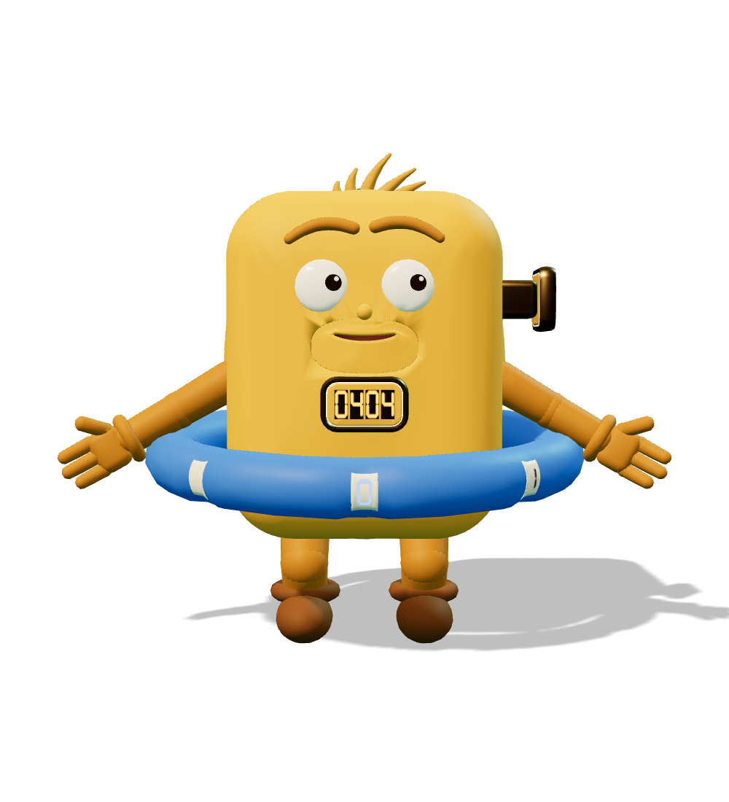
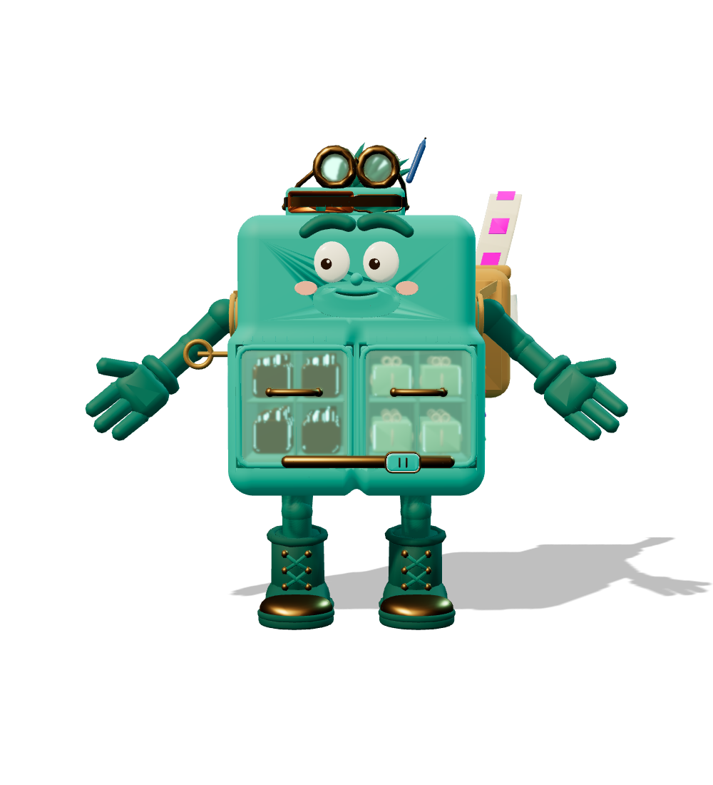
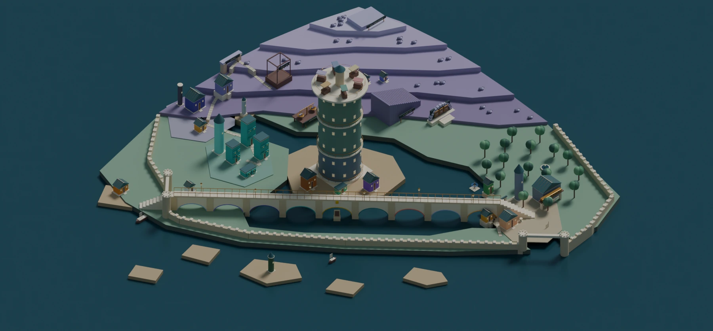

Ein Lernabenteuer in Kontextia
Willkommen in
Kontextia.
Begleite Toki und Kajo durch eine Stadt, deren Bewohner lernen müssen, zusammenzuarbeiten. Löse ihre Streitigkeiten und entdecke spielerisch, wie aus einer Frage eine Antwort entsteht.


Toki & Kajo kommen gleich …
„Manchmal bin ich ein ganzes Wort – manchmal nur ein Stück!“
01 / Die Geschichte
Das Abenteuer beginnt
an der Lichterbrücke.
Die Antwortbrücke bleibt dunkel, weil die Häuser von Kontextia nicht zusammenarbeiten. Als Brückenbauerin oder Brückenbauer reist du durch neun Bezirke, hilfst ihren Bewohnern und bringst die Brücke zum Leuchten. Die Lichterbrücke erzählt eine vollständige Geschichte; im zweiten Teil kannst du die Technik dahinter genauer erkunden.
In Kontextia wird die Arbeit eines Sprachmodells zur Spielwelt. Jedes Viertel zeigt einen Schritt auf dem Weg von der Frage zur Antwort.
02 / Die Stadtkarte
Erkunde die Stadt
auf der Karte.
Wähle ein Stadtviertel und entdecke seine Gebäude, Bewohner und Geschichten. Folge der Reise vom Hafen bis zum Lichterfest oder schau dir an, wie eine Antwort durch die Stadt wandert.
Klicke auf eine Figur, um sie kennenzulernen, oder auf eine Zahl, um den Ort zu erkunden. Die Stadt liegt direkt vor dir. Öffne die große Ansicht, um sie zu drehen, zu zoomen und den Wegen zu folgen.

Zu jedem Bezirk gibt es eine eigene Karte mit Schauplätzen und Etappen. Den vollständigen interaktiven Plan öffnen ↗ · SVG herunterladen

03 / Der Prolog und zehn Spielwelten
Entdecke die Spiele
von Kontextia.
Vom Ratespiel am Hafen bis zur Nebelnacht auf dem Markt: Jede Welt verbindet eine Spielidee mit einem Schritt der Sprachverarbeitung. Wähle eine Welt und erkunde ihre Geschichte, den Spielablauf und die Technik dahinter.
Aktueller Stand: Didaktik 2.2 · L00, L01–L10 · neun Brückenbögen, Widerlager und Brückenlaternen.
Deine Lektionskarten / Stand 2.2
Jede Lektion.
Klar auf einer Karte.
Vom ersten Ratespiel bis zum Abschluss: Schauplatz und Figuren sind nummeriert. Lernziele, Gewinn, Preis und die Grenze des Bildes stehen auf demselben Blatt. Öffne die vollständige Lektion oder lade die Karte zum Nachschlagen herunter.
04 / Spielwelt und Technik
So wird aus Technik
eine Spielwelt.
Kajos Schubladen zeigen gespeicherte Zwischenrechnungen, Tempis Glücksrad zeigt die Auswahl des nächsten Textstücks. Hier erfährst du, warum diese Bilder gewählt wurden, was sie erklären und wo der Vergleich endet.
Zum Ausprobieren / Temperatur und Auswahl
Tempis Temperaturregler ausprobieren
Dieselben drei Punktwerte. Eine andere Verteilung. Bewege die Temperatur und beobachte, wie sich die Chancen ändern.
Lehrbeispiel: softmax([2, 1, 0] / T). Temperatur verändert die Verteilung; sie macht ein Modell nicht klüger.
05 / Der Ablauf einer Antwort
Wie Kontextia
eine Antwort baut.
Nach jeder Runde wählt die Stadt das nächste Textstück. Dann beginnt der Ablauf erneut. Entdecke den Stadttakt und lerne, was die Stadt aus dem Gespräch liest, welche Zwischenrechnungen sie behält und wie sich das vom Training unterscheidet.
Die Häuser von Kontextia / Lore, Bewohner und Gewerke
Jedes Haus hat eine Geschichte.
Zusammen bauen sie die Antwort.
Dreizehn Häuser streiten darum, wessen Wappen auf den Schlussstein gehört. Entdecke ihre Bewohner, ihre Bräuche und ihre Arbeit. Folge den Verbindungen und finde heraus, warum jedes Gewerk auf die anderen angewiesen ist.
06 / Die Bewohner und ihre Häuser
Lerne die Bewohner
von Kontextia kennen.
34 Figuren geben den Rechenschritten ein Gesicht. Finde heraus, welche Aufgabe sie in der Stadt übernehmen, zu welchem Haus sie gehören und wie sie miteinander verbunden sind. In ihrem Album findest du Bilder, Stimmen und Vorstellungsfilme. Die Häuser und ihre Verbindungen erkunden ↗
Die Verbindungen zwischen den Figuren
Was die Figuren miteinander verbindet
Q, K und V sind Geschwister: drei Projektionen derselben Darstellung. Andere Verbindungen erzählen von Gewichten, Schnittstellen oder der Stadtgeschichte.
07 / Der Podcast
Mach es dir gemütlich.
Wir erzählen dir Kontextia.
Toki, Kajo und die anderen Bewohner erzählen ihre Geschichte mit eigenen Stimmen. Wähle eine Folge, springe zu einem Kapitel oder höre dir die Figuren einzeln an.
Mach es dir gemütlich. Die Bewohner nehmen dich mit durch ihre Stadt.
Deine Reise beginnt mit
Kajo CacheMach es dir gemütlich. Die Bilder begleiten die Stimmen.Toki, Kajo und ihre Freunde nehmen dich mit durch Kontextia.
Mit wem wir durch Kontextia reisen
Dieses Kapitel mitlesen · mit Bildern und Sprecherwechseln
Alle Kapitel entdecken 16 Stationen durch die Stadt
Die Bewohner einzeln hören Toki, Kajo und Quirin stellen sich vor
Du möchtest mitlesen? Öffne die bebilderte Geschichte ↗
Die Geschichte mitlesenKurz- und Langfassung · 16 Kapitel mit den Bewohnern von Kontextia
Kajo führt dich durch die Geschichte. Toki, Quirin und die anderen Bewohner erzählen selbst von ihrem Leben in der Stadt.
08 / Freispiel und der zweite Teil
Die Stadt lebt weiter.
Wohin führt deine Neugier?
Öffne das Figurenalbum, folge einer Verbindung, probiere Kajos Archiv aus oder plane einen Ausbau. Die Erkundung führt dich zu Geschichten, Festen, Zahlen und den Spielideen aus dem Turm der Tiefe.
Kontextia bauen / Der Freispielentwurf
Baue Kontextia
nach deinen Ideen aus
Im Freispielentwurf kannst du die Stadt mit 47 Modulen verändern. Vergleiche ihre Vorteile und Kosten und entdecke die fünf Stadtaufträge, für die du sie einsetzen kannst.
So ist der Lernweg aufgebaut
Ausprobieren, prüfen
und selbst anwenden
09 / Fragen zum Spiel
Was du über
das Spiel wissen möchtest.
Hier findest du Antworten zu Altersempfehlungen, Lernzielen und Zugänglichkeit sowie den aktuellen Stand der Entwicklung.
Einblick in die Entwicklung / Oktober 2026
Der aktuelle Entwicklungsstand
Deine Reise durch Kontextia